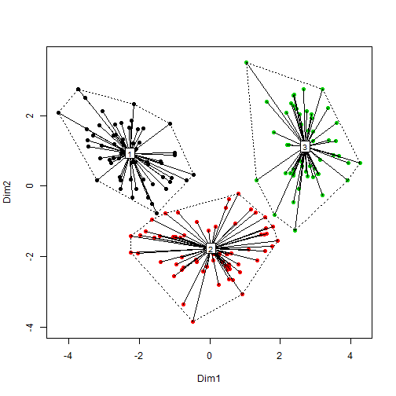

The wine example using K-Means (Clustering technique)
Author : Edurne Alonso Moran
Introduction
A dataset containing 13 chemical measurements on 178 Italian wine samples is analyzed. These data are the results of a chemical analysis of wines grown in the same region in Italy but derived from three different cultivars.
Methodology
1) For building the shiny app, a K-means cluster of the data is performed. The number of clusters is determined by user.
2) Since K-means cluster analysis starts with k randomly chosen centroids, a different solution can be obtained each time the function is invoked. Indeed, the variables vary in range, so they are standardized prior to clustering.
R code and plot
R code
data(wine)
df<-scale(wine[-1])
c<-kmeans(df,3)
cmd<-cmdscale(dist(df))
groups<-levels(factor(c$cluster))
ordiplot(cmd)
for(i in seq_along(groups)){
points(cmd[factor(c$cluster)==groups[i],],col=i,pch=16)}
ordispider(cmd,factor(c$cluster),label=TRUE)
ordihull(cmd,factor(c$cluster),lty="dotted")
R plot 
My Shiny App
The image of the shiny app designed is the following one: